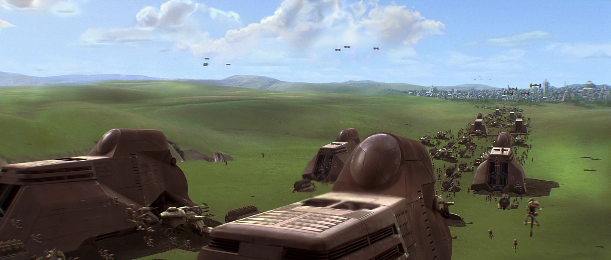
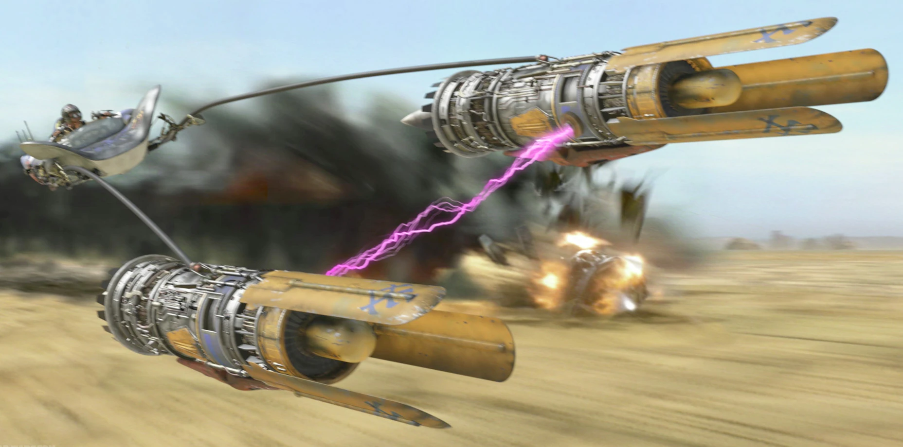
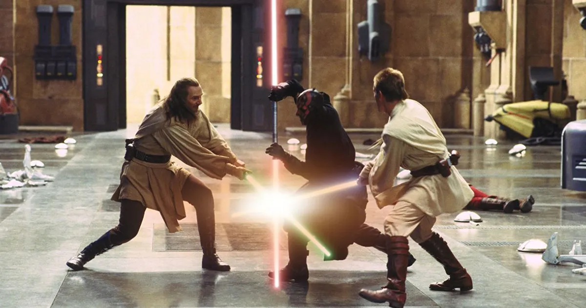

Shrnutí příběhu
Planeta Naboo je blokována Obchodní federací, vedenou Nutem Gunrayem, jako protest proti novému zákonu o danění obchodních cest. Nově zvolená královna Naboo, Královna Amidala požádá kancléře republiky Valoruma o diplomatickou pomoc. Ten vyšle na Naboo dva rytíře Jedi, (Obi-Wan Kenobiho a Qui-Gon Jinna). Ti jsou však při vyčkávání na audienci přepadeni droidy Obchodní federace a jsou nuceni uprchnout do lodních hangárů. Zde objeví obrovskou armádu droidů, kteří se připravují k výsadku na planetu. Podaří se jim ukrýt v invazních lodích a spolu s vojenskými silami přistávají na planetě.
Oba dva rytíři Jedi se poté vydávají požádat o pomoc podmořskou říši, Gungany. Představitel Gunganů však odmítne poskytnout jakoukoli pomoc, kromě lodě pro Jedie na proplutí planety za doprovodu Gungana, Jar-Jar Binkse. Mezitím armáda droidů bez náznaku jediného odporu obsadí celou planetu a zanedlouho vstupuje místokrál Obchodní federace do hlavního města a zatýká královnu Amidalu a nejvyšší členy vlády. Jediové mezitím proplují po mnoha nesnázích jádrem planety a vylodí se v hlavním městě. Zde se jim podaří osvobodit královnu, kterou zrovna eskortují bitevní droidi do tábora. Spolu s královninou stráží se pak probojují do hlavního hangáru, kde se jim podaří odletět v lodi typu Nubian 3000. Při odletu z planety jsou však málem zničeni střelami lodí z blokády, ovšem díky hrdinství droida R2-D2 přežijí a odlétají na planetu Coruscant vysvětlit senátu Galaktické republiky, jak se věci mají. Mezitím se však jejich loď porouchá, a tak skupina nuceně přistane na pouštní planetě Tatooine.

Ihned po dosednutí se Qui-Gon vydává spolu s Jar-Jar Binksem a královnou Padmé Amidalou (která předstírá, že je svá vlastní služebná) do blízkého města. Zde se snaží najít obchodníka se součástkami na opravu Nubiana. Naleznou pouze jediný obchod, kde je motor k dostání, ale tam nemohou zaplatit, protože Qui-Gon má jen republikové peníze a ty obchodník nehodlá přijmout. Musí tedy najít jiný způsob, který se mu ale brzo dostane pod ruku. Je to mladík Anakin Skywalker, který slouží jako opravář v zmiňovaném obchodě. Nabídne se, že poletí závod kluzáků se svým tajně postaveným kluzákem. Qui-Gon v Anakinovi ucítí velkou Sílu a proto svolí. Ten den večer také zjistí, že Anakin má největší množství midichlorianů v těle, jaké kdy bylo ve vesmíru zjištěno.
Následujícího dne se koná závod, ve kterém Anakin po lítém boji se svým sokem Sebulbou zvítězí a tak vyhraje peníze na nakoupení součástek. Zároveň je díky Qui-Gonovi osvobozen a může s ním letět na Coruscant. Během několika dnů je loď připravena ke startu. Ve chvíli, kdy k ní Qui-Gon přichází spolu s Anakinem, napadne mistra Jedi neznámý muž s červeným světelným mečem (Darth Maul). Qui-Gon sice unikne i s Anakinem, ale je z nenadálého setkání velmi překvapen a rozhodne se o něm informovat radu Jediů. Po příletu na Coruscant jde královna (ve skutečnosti služebná, která hraje dvojnici královny) okamžitě do republikového senátu upozornit na porušení práv své planety, ale celý senát je podplacený Obchodní konfederací, tudíž služebná nedosáhne žádného výsledku. Celá zoufalá uposlechne rady senátora Palpatina, aby se pokusila hlasovat o nedůvěře senátu kancléři Valorumovi. Hlasování skončí kancléřovým odvoláním a začne se vybírat nový kandidát. Mezitím informuje Qui-Gon s Obi-Wanem o podivném incidentu na Tatooine a zároveň se snaží, aby rada začlenila Anakina do řádu Jedi. Rada to však odmítá, protože se jí zdá, že malý chlapec je příliš nebezpečný. Qui-Gon je velmi pobouřen, ale nechce radě příliš odporovat a tudíž se podvolí.

O několik dní později už královna Amidala (služebná) nevydrží čekat a rozhodne se odletět zpět na Naboo, aby se pokusila získat vládu do svých rukou. Opět ji doprovází Qui-Gon s Obi-Wanem a nakonec také Anakin. V rozhodující chvíli se královna Amidala odhalí před Gungany, aby odlákali armádu Obchodní federace od města, zatímco ona v nehlídaném městě vpadne s malým oddílem do paláce a pokusí se zajmout místokrále. O pár dní později je plán proveden. Armáda Gunganů čelí na pláních nedaleko od města přesile armády droidů, která, řízena z velící lodě na orbitě planety, dosahuje rychlého vítězství. V hlavním městě však v té chvíli dvě malé skupinky (jedna pod vedením královny a druhá pod velením služebné) vpadnou do paláce společně s oběma rytíři Jedi a Anakinem. V paláci však narazí na Dartha Maula, který se pusti do boje s oběma Jedii. Anakin mezitím omylem odstartuje ve stíhačce za ostatními bojovníky na oběžné dráze. Podaří se mu proniknout až do hangáru řídící lodě droidů, kde odpálí několik střel do hlavního generátoru, čímž loď zničí a armáda droidů se tím deaktivuje, tudíž jsou Gungani zachráněni. Mezitím královna zajme místokrále. Avšak Qui-Gon a Obi-Wan neustále svádějí tuhý souboj s Darthem Maulem. Po lítém souboji Maul zabije Qui-Gona, ale Obi-Wan ho následně s velkým štěstím zabije, přičemž jasně potvrdí, že tajemný muž byl Sith, o kterých se myslelo, že už dávno zmizeli z vesmíru. Následně doběhne k umírajícímu mistrovi, kterému dá slib, že vychová Anakina jako svého padawana. Yoda zprvu odporuje, ale poté, co se dozví, že Obi-Wan dal slib, rozhodne Anakina do řádu přijmout.
Královna Amidala tak opět získá moc na Naboo spolu s Gungany. Na Coruscantu se zvolí nový kancléř, jímž se stane nečekaně Palpatine, který také okamžitě přilétá na Naboo, aby oslavoval vítězství demokracie a také aby se zúčastnil pohřbu Qui-Gona. Nový kancléř tedy může být spokojen, ale rada Jediů ne. Do galaxie se vrátili Sithové. Síly dobra a zla se opět blíží k střetu...